The Armenian flag and the Dutch lion
At the top of the canvas, an Armenian flag stood beneath GreyBlob’s grey cat. Both groups negotiated with their neighbours. When Dutch builders drew a coat of arms across the same patch, even Dutch participants who backed the agreements struggled to protect it.
Follow the canvas
Step through 14 views of the same patch, from the opening scene to the close of the canvas.
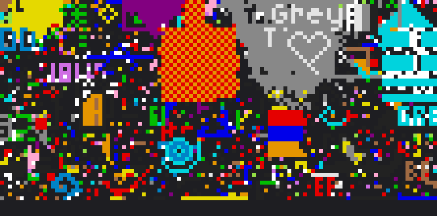
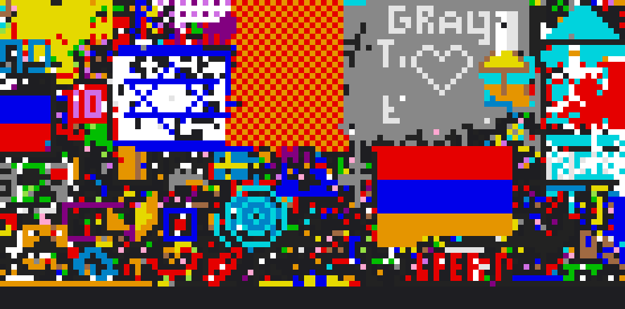
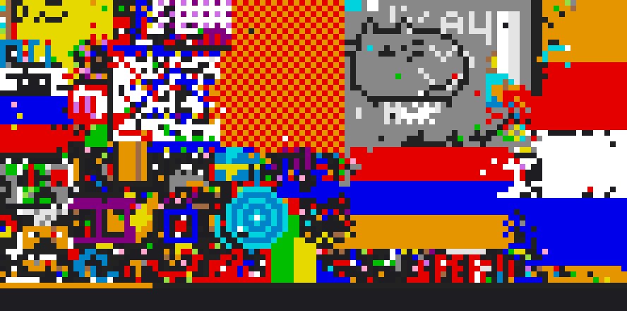
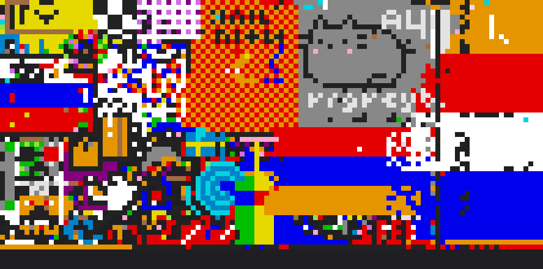
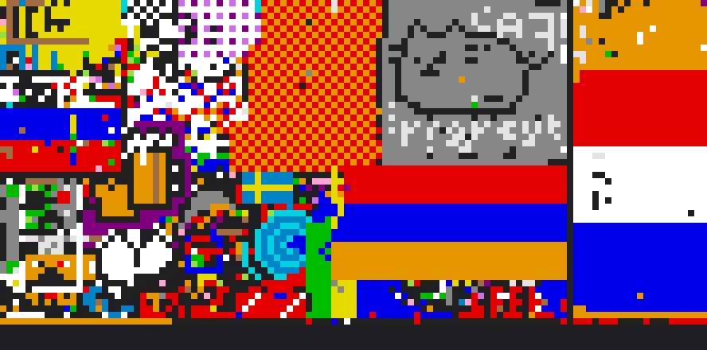
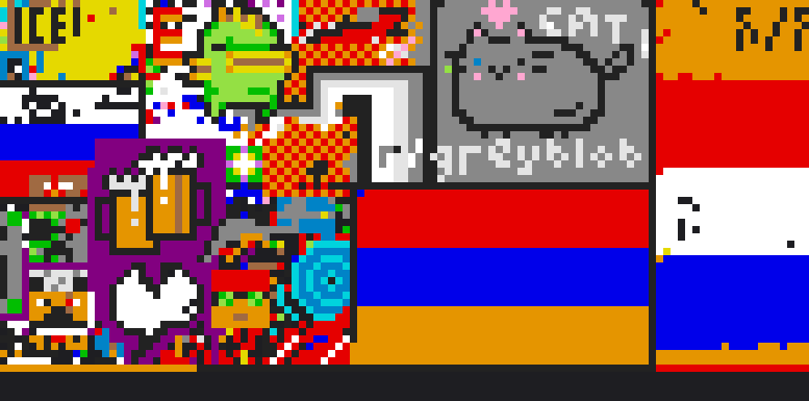
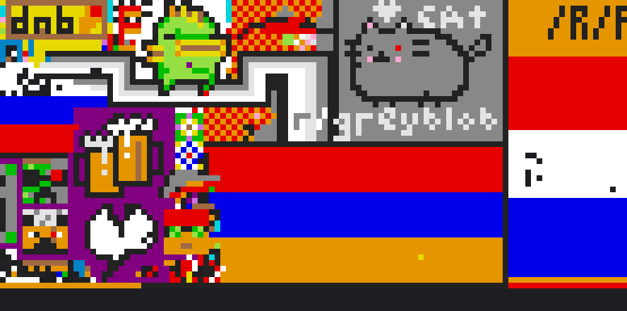
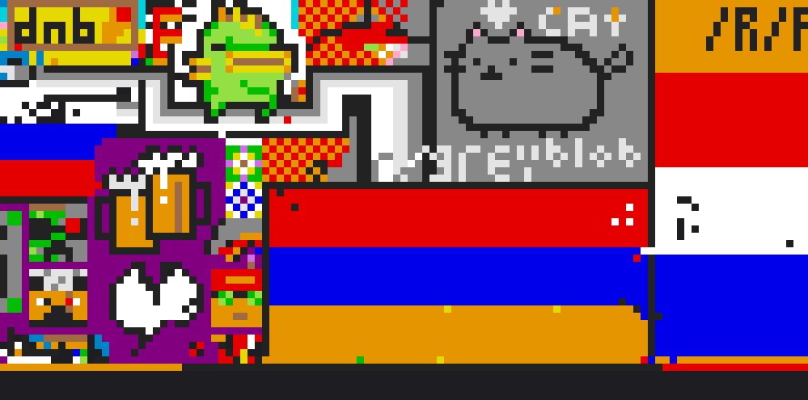
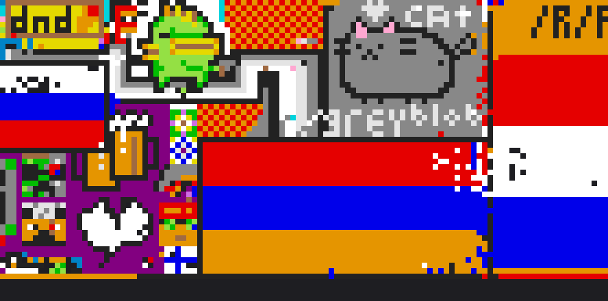
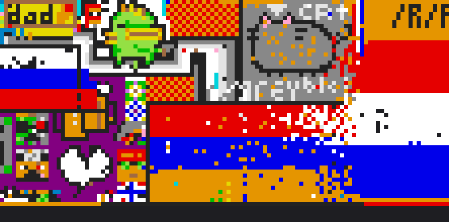
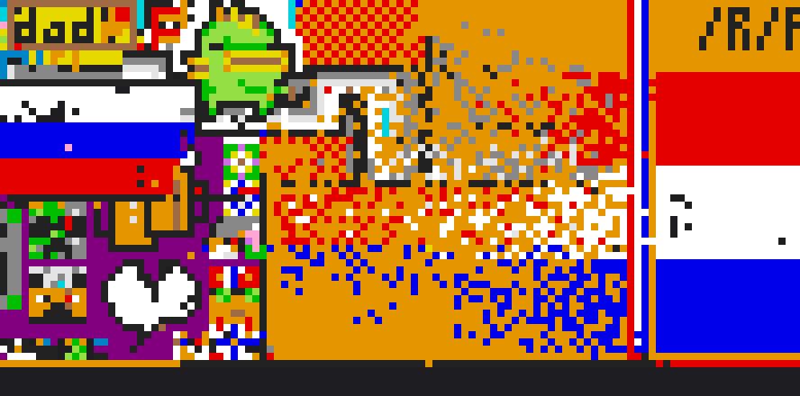
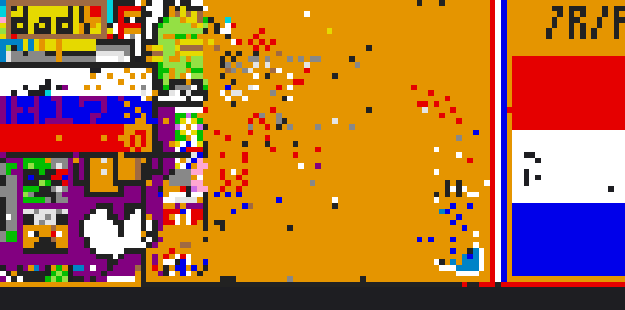
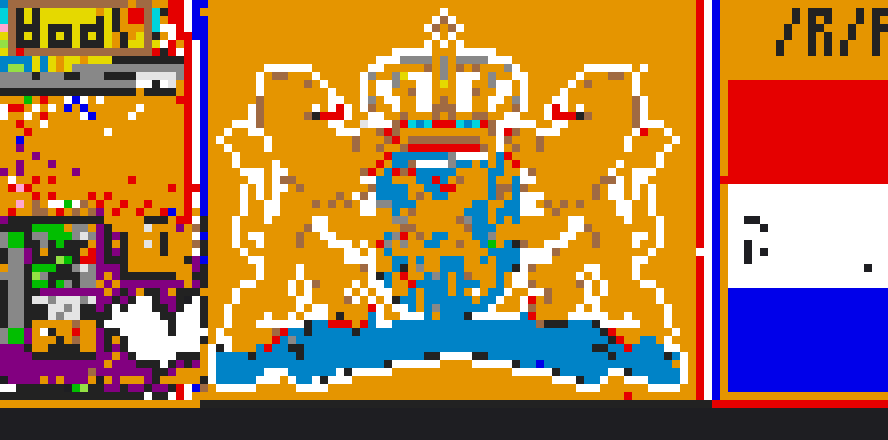
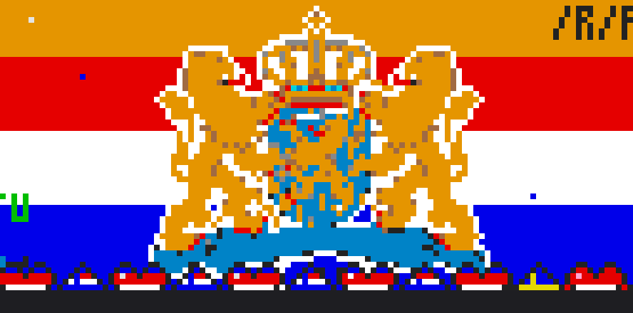
What happened
Two neighbours settle a border
The Armenian flag widened beneath GreyBlob’s banner. An Armenian envoy asked the Dutch for a border, and GreyBlob announced a ceasefire along its southern edge. By the morning of 2 April, the flag, a heart and the cat were all visible.
See frame F · The Armenian envoy’s request · GreyBlob’s ceasefire · The completed flag
The lion crosses the border
A diplomat from r/cirkeltrek had visited GreyBlob. Other participants in the same subreddit were planning Operation Lion. As orange pixels spread across the cat and flag, Armenian participants asked GreyBlob for help. A Dutch visitor to GreyBlob blamed people acting outside the agreement. Minutes later, a new thread in r/cirkeltrek called for annexation.
See frame J · The diplomat’s visit · Operation Lion · The Dutch visitor’s explanation · The call for annexation
The displaced groups look for new sites
By mid-afternoon on 2 April, orange filled the patch. A crown, shield and two lions appeared there. Armenian participants tried a site above the Turkish flag and later reported rebuilding above the Indian flag with permission. GreyBlob discussed moving its work to the grey road.
See frame M · The first proposed move · Armenia’s relocation thread · GreyBlob’s new site · Report from the new site
Who placed pixels as the coat of arms took shape?
| Interval start (UTC) | r/armenia, no Dutch room | Dutch room, no r/armenia | Both |
|---|---|---|---|
| 06:10 | 27 | 12 | 5 |
| 13:30 | 33 | 165 | 34 |
| 14:10 | 23 | 196 | 19 |
The counts cover the whole pictured area, including the cat. Other accounts also placed pixels there. Posting in a subreddit tells us where someone spoke. It cannot establish who supported a pact or who chose to break it.
Check the record
The timeline places the discussions alongside ten-minute counts and dated canvas images. Times marked H on the timeline count from 16:00 UTC on 31 March 2017.
Open the full timeline · Placements by posting group (TSV) · Placements in the flag and coat of arms (TSV)

The original timeline retains some frame captions numbered for an earlier thread list. The links in this account use Reddit post IDs from the expanded 59-thread record. Replay the wider Dutch area.
Browse the 59 source threads
Threads are listed by posting time. Each title links to the original Reddit discussion.
- · r/armeniaLet's make the Armenian flag with 6 pixels per bar and diagonal to our brother Greece on /r/place!
- · r/greyblobThe Dutch.
- · r/thenetherlandsThe Hollandic lion must stand to the right of the wilhelmus
- · r/armeniaNEW UPDATE: GREECE HAS ALL BUT FALLEN FALLEN TO THE DUTCH, THEIR DEMISE IS IMMINENT AND WE ARE NEXT, EXPAND TO THE WEST AS QUICKLY AS POSSIBLE AND AT ALL COSTS OR ELSE WE WILL MEET THE SAME FATE AS GREECE
- · r/cirkeltrekFor the love of god, spare Armenia the fate that Greece has befallen
- · r/cirkeltrek<------ PEOPLE WHO WANT TO ANNEX THE ARMENIANS AND /R/GREYBLOB
- · r/cirkeltrekWe need a lion
- · r/cirkeltrekI am here form r/greyblob.
- · r/thenetherlandsHello, I represent /r/Armenia, the flag to your immediate left. We are few in numbers and will surely die out if your expansion continues, would negotiations of a border and perhaps an alliance be possible?
- · r/armeniaAttention all /r/place participants: We must recognize we are a much less populous nation than the Netherlands. If we must, who do you suggest we ask for aid in spreading our flag west?
- · r/cirkeltrekThis is what an alliance with /r/greyblob, our western neighbours, could look like
- · r/greyblobThe dutch are too difficult to fight, we should fill in grey within our boundary and take over the checkerboard over night.
- · r/greyblobThis is what an alliance with the dutch could look like.
- · r/greyblobMy proposal for the future of greyblob
- · r/armeniaGreat work Armenia!!! We did it!! However, let's not anger the checkerboard region. We just won our battle against the cirkeltrek trolls. Let's not get involved in another fight! Stay strong!
- · r/greyblobGreetings /r/GreyBlob! We would like to establish peaceful diplomatic relations with you.
- · r/thenetherlandsWe at /r/Armenia would like to thank /r/theNetherlands!
- · r/greyblobr/Armenia ceasefire on the southern border.
- · r/cirkeltrekr/GreyBlob does not wish to hurt you in the Place.
- · r/armeniaWe finally did it! a full Armenian flag, and Armenia heart are on the map!
- · r/greyblobEastern border experiencing some trouble
- · r/greyblobHello! I am a diplomat from /r/cirkeltrek and /r/thenetherlands
- · r/cirkeltrekPortrait of Máxima or the lion on our new colonies in the east of /r/plaats?
- · r/cirkeltrekPetition to make a pact with Goodboye.
- · r/cirkeltrekOperation Lion
- · r/greyblobLooks like this is it.
- · r/PlaceNLPlans with /r/Goodboye. Border around it and otherwise hands off.
- · r/greyblobAAAAAAAA THEYRE INVADING
- · r/cirkeltrek<------ Number of royal subjects who think the Netherlandish Lion won't be stopped by a pussycat on the western border!
- · r/cirkeltrekI think we should show Armenia who's boss for a moment.
- · r/cirkeltrekPlan of attack on the left Wing
- · r/armeniaWhat is going on in the East? Are the Dutch invading?
- · r/greyblobArmenia will do everything it can to preserve both of our territories against cirkeltrek.
- · r/greyblobHelp us /r/GreyBlob! You're our only hope! Armenia needs you!
- · r/greyblobDear /r/greyblobs, we mean you no harm! It's the randoms that are attacking you!
- · r/thenetherlandsHello from /R/Armenia, please do not invade us.
- · r/armeniaI am so sorry, I can't do anything about it, apparently the Netherlands are going to take over the Armenian flag and GreyBlob :'(
- · r/greyblobI am so, so sorry! I can't do anything about it, the masses have spoken... The Netherlands is taking over Armenia and the Grey Blob...
- · r/thenetherlandsArmenia too shall bow before Wilhelmus van Nassauwe (Apparently)
- · r/greyblobINPOLDEREN! INPOLDEREN!
- · r/PlaceNLthe new plan!
- · r/cirkeltrekAnnex Armenia!
- · r/armeniaRECLAIM IT
- · r/armeniaSwear allegiance to your new Kingdom!
- · r/czechNetherlands just invaded Armenia and are expanding further westwards. Be prepared to defend our borders.
- · r/greyblobHold your ground!
- · r/armeniaArmenian flag is attacked. Don't let him fall!
- · r/cirkeltrekFinal plans for the left flank! To work, fellow colonists!
- · r/armeniaNew Location for Armenian Flag: Above Turkish Flag
- · r/cirkeltrekArmenia victim of genocide; help them found a new state at (430, 150)
- · r/armeniaArmenian Flag Location: Strategy
- · r/greyblobWhere should we start our new base?
- · r/cirkeltrekAfter annexing them, help replace the Armenian flag... right above Turkey
- · r/PlaceNLAfter the Coat of Arms, take over the right-hand corner?
- · r/armeniaGUYS, I'VE LINKED THE COORDS OF THE NEW LOCATION FOR THE ARMENIAN FLAG, WE ARE BUILDING IT RIGHT ABOVE THE TURKISH FLAG, ITS ALREADY PARTIALLY COMPLETE, LET'S KEEP AT IT AND REMEMBER WE ARE ALLIED WITH THE TURKS AND GREEKS BELOW US
- · r/cirkeltrekA request from the people at /r/greyblob
- · r/greyblobThe grey blob we are building at (460, 9) is too close to the Dutch and will likely get run over. What to you think about helping to grow the grey road at (374, 61)?
- · r/greyblobProposal: Turn the grey road into Grey Blob 2.0
- · r/placeheartsMonochrome heart for GreyBlob remembrance